Aula 5:
Transformada de Fourier de Tempo Curto
(Short-time FFT)
SEL0343
24 de março de 2026


 $$
N=8
$$
$$
N=8
$$

A Transformada de Fourier Clássica (FT) nos diz quais frequências existem em um sinal, mas não quando elas ocorrem.

A Transformada de Fourier Clássica (FT) nos diz quais frequências existem em um sinal, mas não quando elas ocorrem.

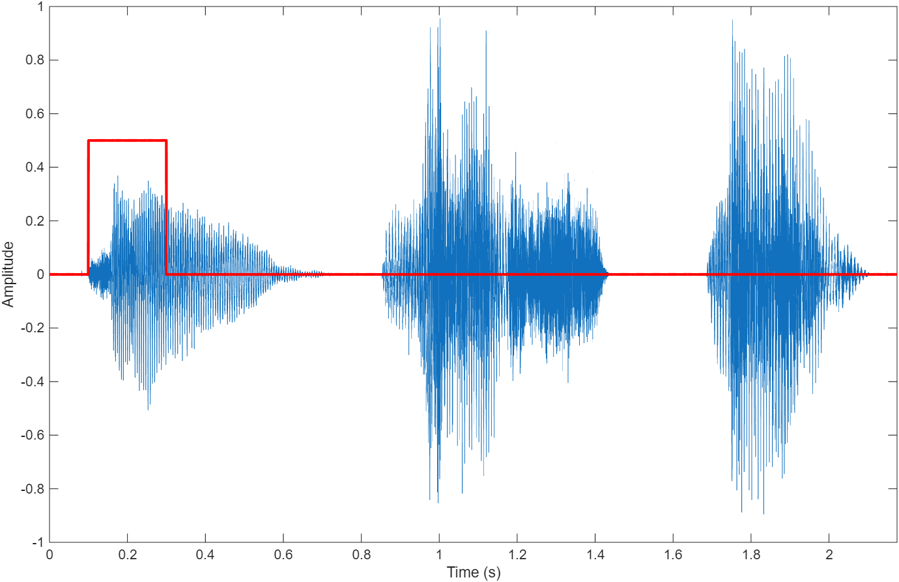


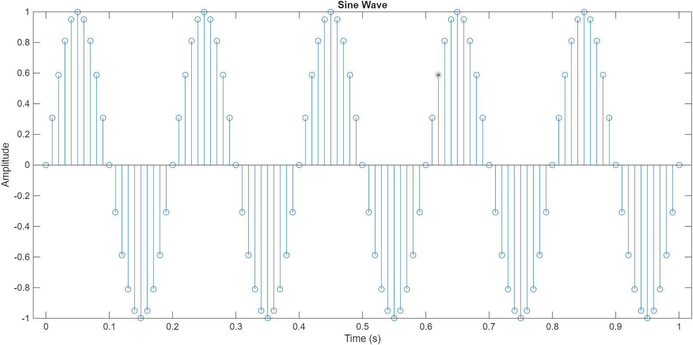
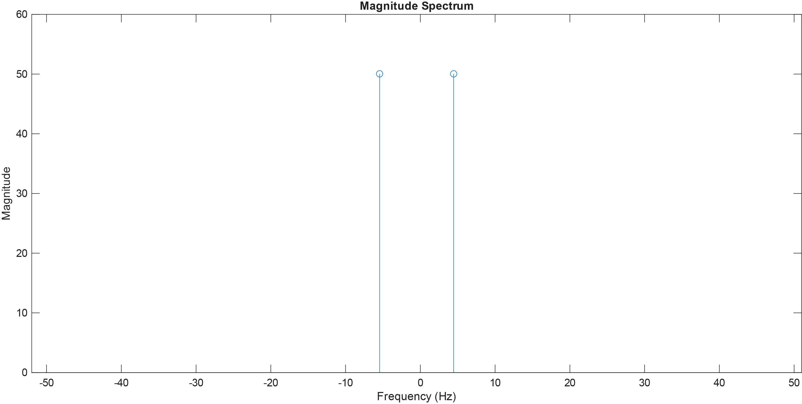
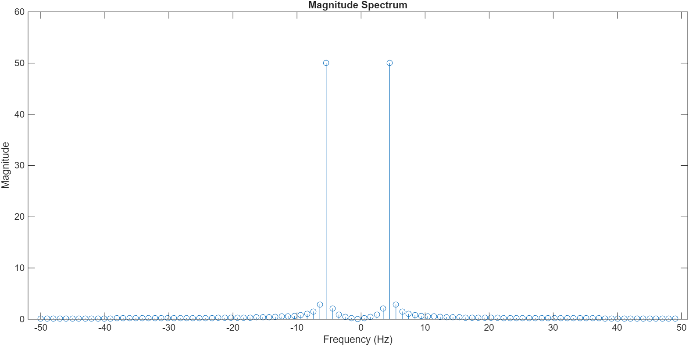
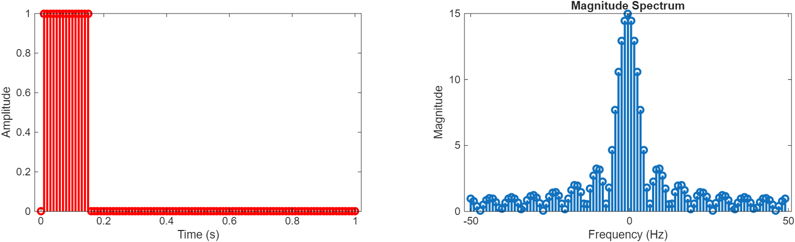
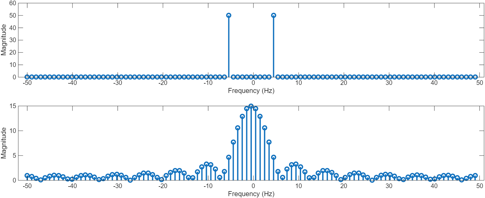
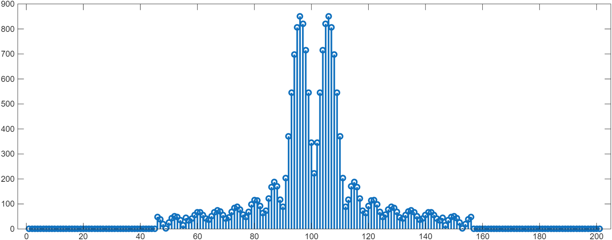
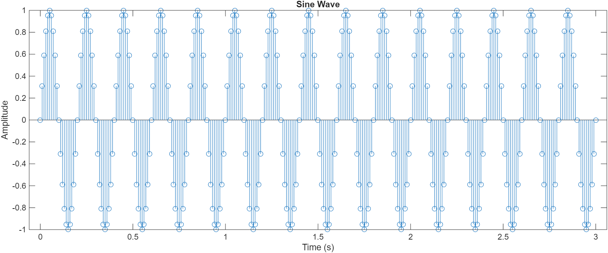
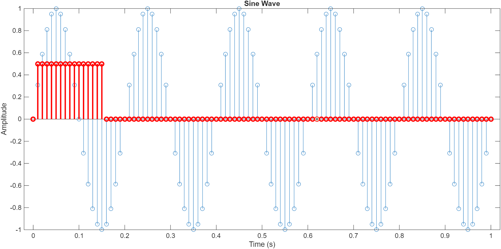
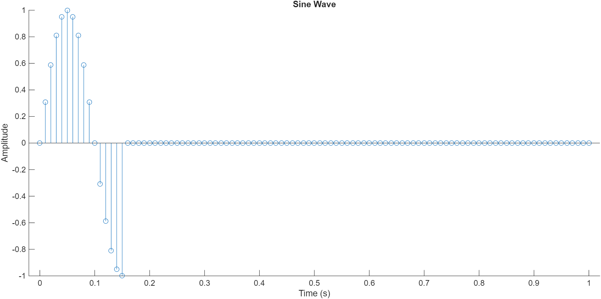
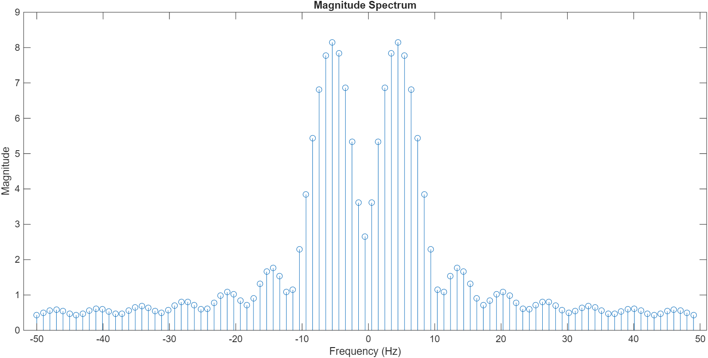
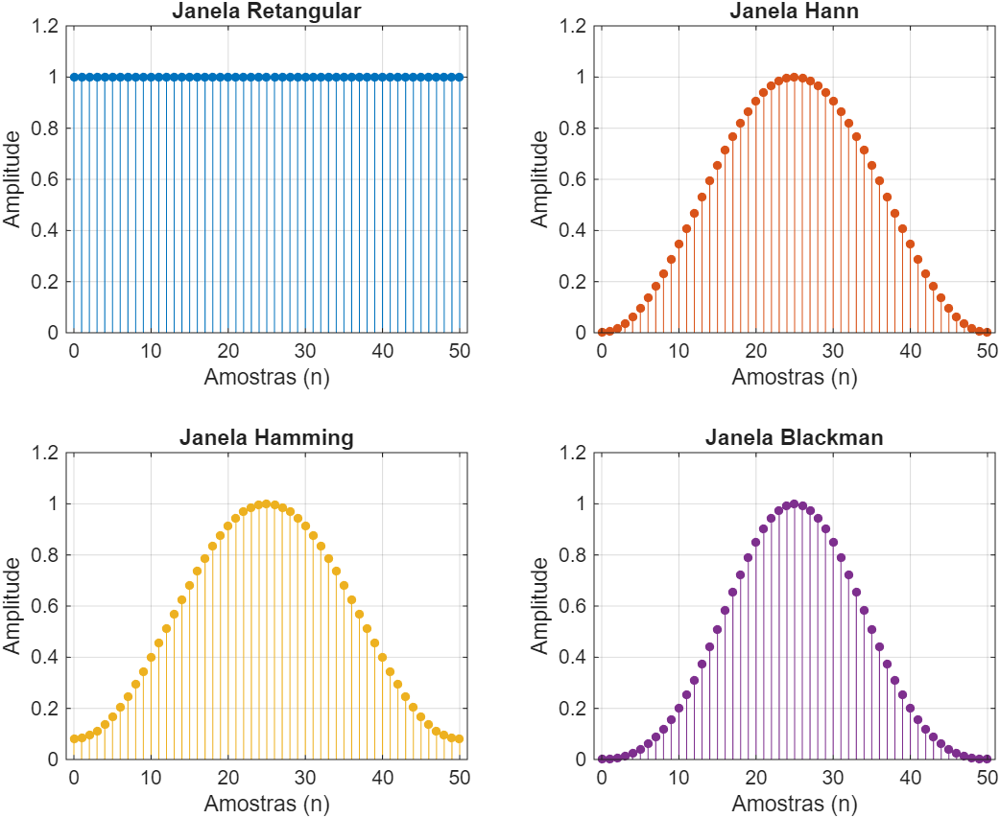
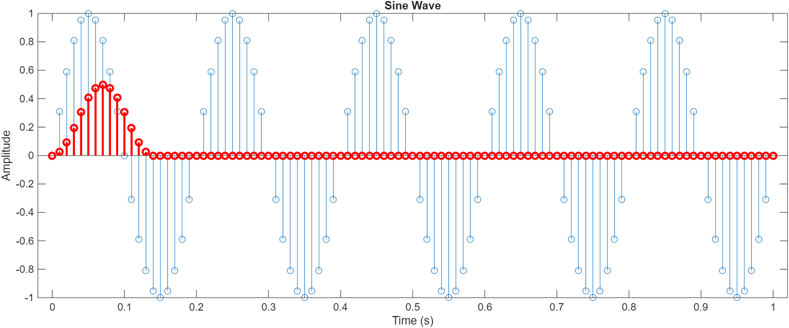
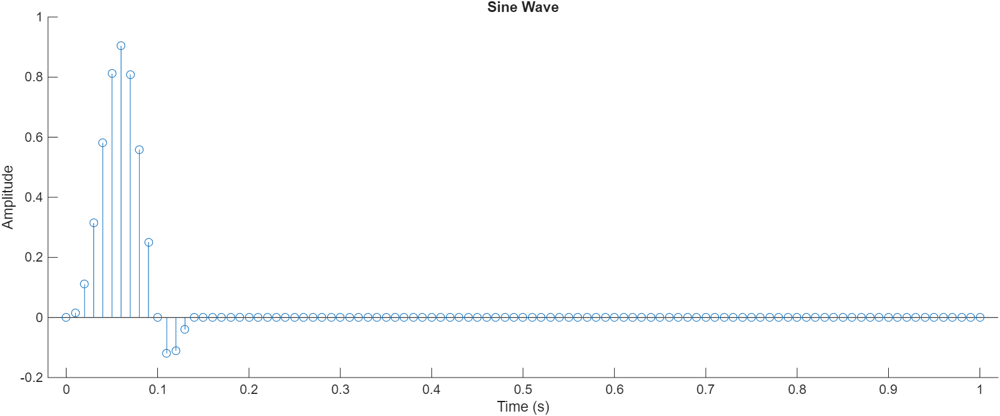
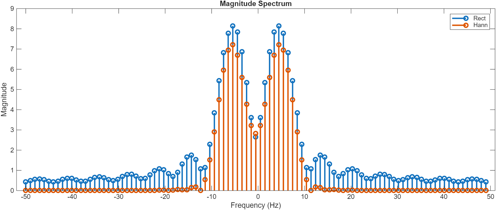